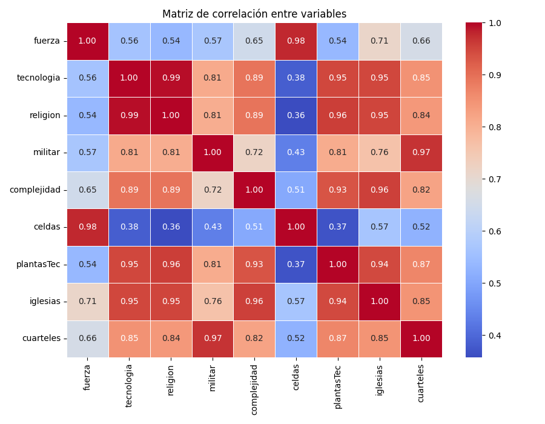

Analítica Avanzada Civilizaciones
1️⃣ Regresión lineal fuerza vs celdas: Relación directa entre tamaño y fuerza por civilización.
2️⃣ Regresión lineal complejidad vs total de edificios: ¿A más edificios, más complejidad?
3️⃣ Regresión múltiple de fuerza final: ¿Qué métricas predicen mejor la fuerza final de una civilización?
4️⃣ Matriz de correlación: ¿Qué variables están más relacionadas entre sí?

5️⃣ Clusterización: Agrupación de civilizaciones por patrón final de fuerza y tamaño.
6️⃣ Saltos anómalos: Identificación de ciclos con grandes cambios de fuerza o complejidad.
7️⃣ Aceleración/deceleración: Periodos donde crece o desacelera el poder de cada civilización.